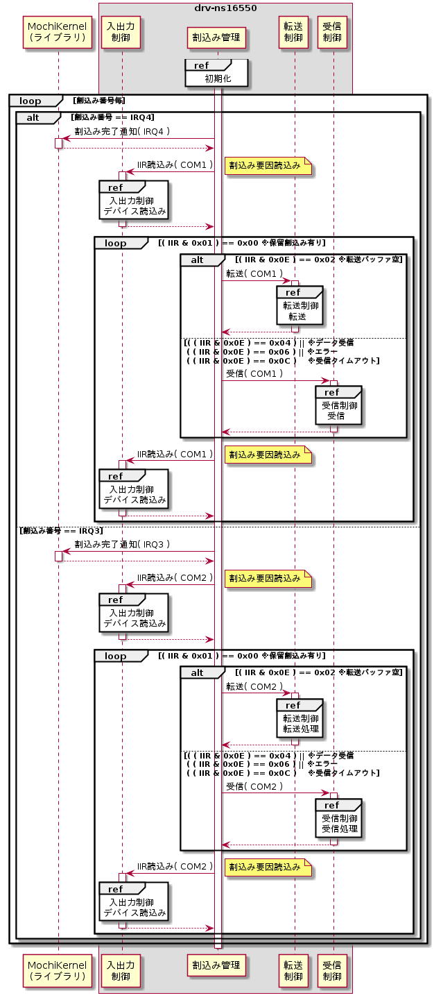

初期化
割込み管理モジュールは初期化時に受信スレッドを生成し、受信スレッド上で割込み設定と待ち合わせを行う。初期化シーケンスを以下に示す。
受信スレッド作成
割込み待ち合わせとデバイスから受信データを取得するためのスレッドを作成する。
始めに、作成するスレッド用のスタック領域をC標準ライブラリのmalloc()を用いて割り当てる。次に、MochiKernelライブラリのLibMkThreadCreate()を用いてスレッドを作成する。設定パラメータを以下に示す。
| # | 引数名 | 設定値 |
| 1 | size | 4,096 |
| # | 引数名 | 設定値 |
| 1 | pFunc | エントリ関数ポインタ |
| 2 | *pArg | NULL |
| 3 | *pStackAddr | malloc()の戻り値 |
| 4 | stackSize | 4096 |
| 5 | *pTaskId | タスクID格納先ポインタ |
| 6 | *pErr | エラー要因格納先ポインタ |
割込み監視開始
外部仕様(デバイス割込み待ち合わせ機能)の割込み監視開始を参照のこと。
割込み有効化
外部仕様(デバイス割込み待ち合わせ機能)の割込み有効化(カーネル)、割込み有効化(デバイス)を参照のこと。デバイスへの設定は入出力制御モジュールの機能を用いて行う。
割込み待ち合わせ
外部仕様(デバイス割込み待ち合わせ機能)の割込み待ち合わせを参照のこと。
割込み処理
割込みが発生して割込み待ち合わせから制御が戻った時に、発生した割込み番号毎に対応するデバイスの割込み要因を読込み、割込み要因毎に転送処理または受信処理を呼び出す。転送処理の場合は先に割込み完了通知を行い、受信処理の場合は後に行う。割込み処理シーケンスを以下に示す。

割込み完了通知
外部仕様(デバイス転送機能)の割込み完了通知、および、外部仕様(デバイス受信機能)の割込み完了通知を参照。
割込み要因判定
外部仕様(デバイス転送機能)の割込み要因判定、および、外部仕様(デバイス受信機能)の割込み要因判定を参照のこと。デバイスからの読込みは入出力制御モジュールの機能を用いて行う。
転送
割込み要因が転送バッファ空の場合は転送制御モジュールの転送機能を呼び出してデータ転送を行う。
受信
割込み要因がデータ受信、エラー、または、受信タイムアウトの場合は受信制御モジュールの受信機能を呼び出してデータ転送を行う。